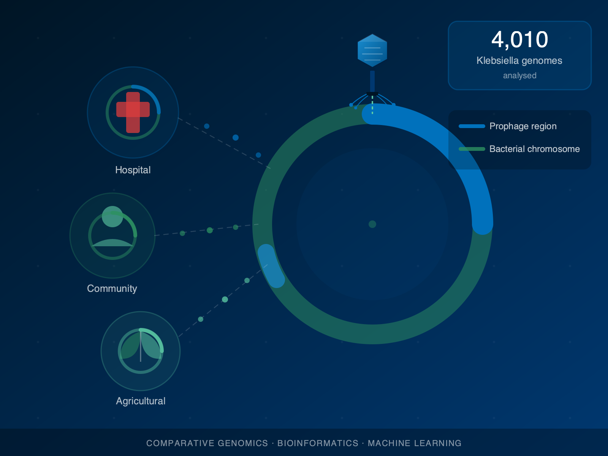
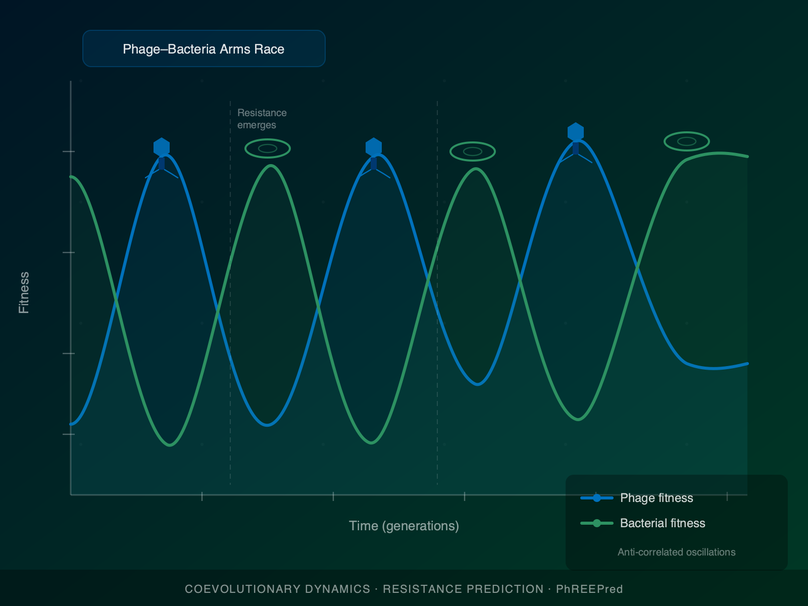
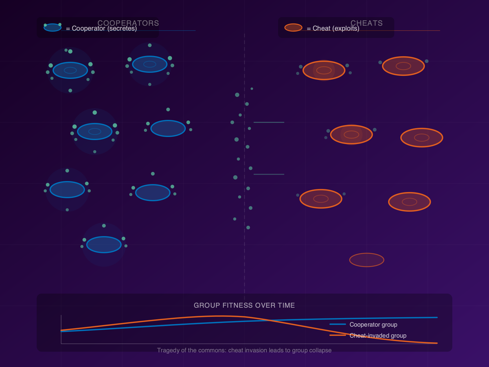

We use mathematical, computational, and genomic tools to understand the hidden roles of viruses in shaping bacterial life.
Our research sits at the intersection of microbial ecology, evolutionary genomics, and mathematical biology. We ask: how do bacteriophages — viruses that infect bacteria — evolve and shape the evolution of their bacterial hosts? How do bacteria evolve to resist phage infection, and what does this mean for phage-based therapies? And how do the social dynamics of microbial communities drive their long-term evolution?

When a bacteriophage integrates into a bacterial chromosome it becomes a prophage — a dormant passenger that may persist for thousands of generations. Far from being inert cargo, prophage-encoded genes can fundamentally reshape their bacterial host's biology, conferring new metabolic capabilities, stress tolerance, or virulence factors.
Our flagship project investigates how prophages in bacteria act as engines of environmental adaptation. Drawing on thousands of bacterial genomes sampled from hospitals, community settings, and agricultural environments, we use large-scale bioinformatic analyses to map how prophage gene content and genetic flux vary across ecological niches — and to identify which prophage-encoded genes are putatively adaptive in each context.
The work has direct implications for understanding the emergence and persistence of hospital-acquired infections caused by clinically challenging bacterial pathogens.

The arms race between bacteria and bacteriophages is one of the most ancient and consequential conflicts in biology. Bacteria evolve resistance to phage infection; phages evolve to overcome that resistance. This cycle drives rapid diversification in both partners and shapes the ecology of every microbial community on Earth.
We study the quantitative rules governing this coevolutionary dance. Using mathematical models, comparative genomics, and machine learning, we develop frameworks and computational tools to predict when and how phage resistance will emerge — and which molecular features of the phage–host interface determine infection outcomes.
Our PhREEPred tool (published in Journal of Molecular Biology, 2022) applies these principles to generate data-driven predictions of resistance emergence trajectories from genomic sequences. Understanding resistance dynamics is critical for phage therapy applications, where sustained phage efficacy against antibiotic-resistant pathogens is a central clinical challenge.

Microbial populations are not just ecological units — they are complex societies shaped by competition, cooperation, and the strategic use of shared resources. Microbes produce costly public goods (enzymes, signalling molecules, iron-scavenging siderophores) that benefit the group but can be exploited by non-producing cheats.
We use mathematical modelling and quantitative data analysis to understand how these social dynamics drive community structure and long-term evolutionary outcomes. Our published work has demonstrated that the privatisation of shared metabolic resources can trigger catastrophic population collapse (Nature Ecology & Evolution, 2019), and that population density can paradoxically promote the evolution of cooperation under certain ecological conditions (ISME Journal, 2018).
We also develop statistical tools for the microbiology community — including the Microbial Lag Calculator (R package and Shiny app, Methods in Ecology and Evolution, 2024) — that make quantitative analysis of microbial growth dynamics accessible to empirical researchers.